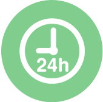
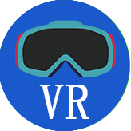

为什么选择中研教育？
我们为诸多企业搭建有效提供企业品牌的认知，和促进销售提升的网络平台。
一流的互联网技术团队
诚信、专注、专业
别具匠心的方案，我们做的就是与众不同！
-

专业工程师实时待命
每位工程师都经过严格的审核后赋予相应 的技能评级，保证任务高效完成。
-
一丝不苟 品质保障
开发设计过程中，认真严谨，确保每个细节不出差错。
-
团队协作 高质高效
专业分工 发挥每位工程师技术优势； 紧密协作，保证任务的高质量和高效率。
-
严控成本 提升客户经济效益
让客户省钱就是帮客户创造更大效益。
合作流程
SERVICE PROCESS
-
前端沟通
1.需求调研 2.方案制作 3.需求确认 4.签订合约 -
产品规划
1.设计规划 2.逻辑验证 3.优化框架 -
程序实现
1.根据框架功能设计 2.进行程序开发 -
质量检测
1.功能调试 2.功能优化 3.标准测试 -
售后服务
1.交付使用 2.跟进反馈

-
网站开发
从策划、IA信息架构设计、视觉创意设计到前后台技术开发。以技术为导向的高端网站建设到现今“大数字营销平台”服务的推出，我们为客户提供的绝不仅仅是简单的网站。
-
移动APP开发
我们创造人性化的服务体验设 计，我们坚持以“人”为先， 发现商业机遇，深入用户触点 ，带来从探索到创新、从品牌 到战略的移动APP量身定制 开发。
-
HTML5定制开发
我们的技术涵盖成熟的移动视 觉识别体系、全系统交互和设 计语言，并沉浸于研究场景， 通过视觉、交互、情感等多维 度的细节设计，整体提升品牌 H5的移动体验。
-

VR技术学习与开发
我们深入理解用户与VR技术特性，为项目开发设计提供策略支持。运用成熟的技术,优化交互效果和功能体验，为客户提供VR系统开发及项目承接制作。服务领域包括：数字城市仿真系统、房地产营销系统、 院校仿真实验室、科博馆数字娱乐设备、地下空间可视化系统、虚拟现实平台软件研发；动漫游戏、建筑家装、旅游、消防安全、学科教育、工业制造等行业的项目定制。
团队技术定制孵化
CUSTOM TEAM TECHNOLOGY INCUBATION
-
团队孵化
全程负责从团队建设，技术培训以及产 品开发、监管，在完成您的项目时，您 将得到自己专属的核心团队。
-
团队建设
不用再担心是选择自己组建团队成本高？ 外包团队信不过？我们提供了第三种选 择，从0到1为你招聘、培训、指导最终 成为有默契的一只核心团队。
-
技术培训
系统化、专业化的研发技术培训，1对1 无距离感的交流沟通。让团队在参与项 目定制开发中成长，并提供相应的规划 指导。
-
产品开发
深度配合式的工作模式，以中研教育的丰富编程开发经验的开发人员为主团队，并教导新的团队进行项 目定制开发，充分保障了您的业务的独特性的需求，也确保了孵化团队后续的基础维护服务、SEO营销 推广服务以及整站综合运营服务，让您的网站在建站后具有生命力与竞争力。
-
监管体制
专注于项目定制开发，多年的互联网从 事经验；我们拥有成熟的项目管理流程 与完善的质量监控体系，保证了商家的 操作流程性和用户体验流畅。
-
项目审核
专业的研发流程为你提供定制化解决方 案，实现你期望的成果。初次的审核确 认，经过沟通有疑问或不足的，将进行 再次的优化修改，直到你我满意为止。
-
团队交接
在完成您的项目，交接时，您将得到自 己专属的专业化流程、优质的服务、丰 富的经验以及对创意品质的追求核心团 队。